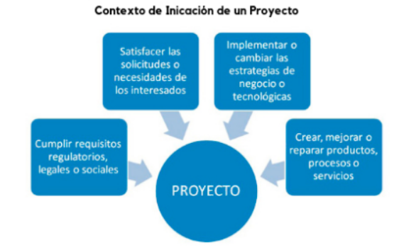
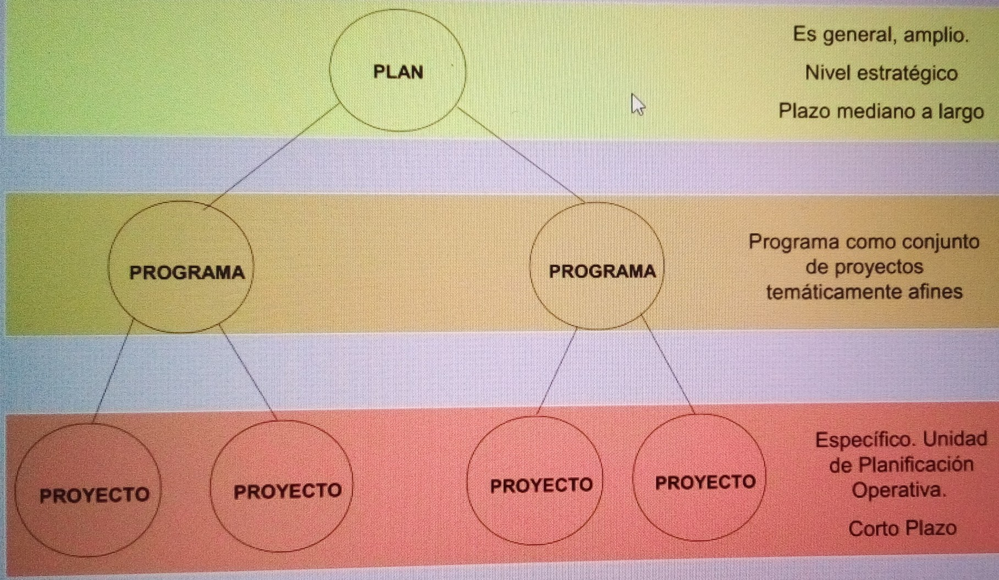
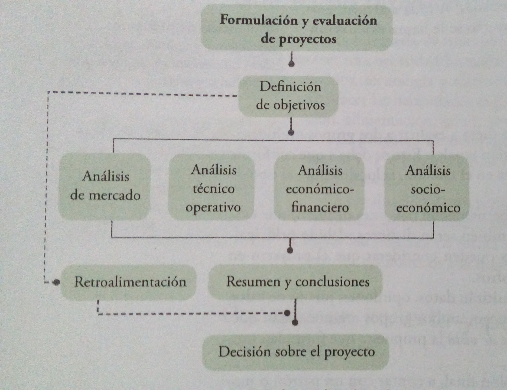
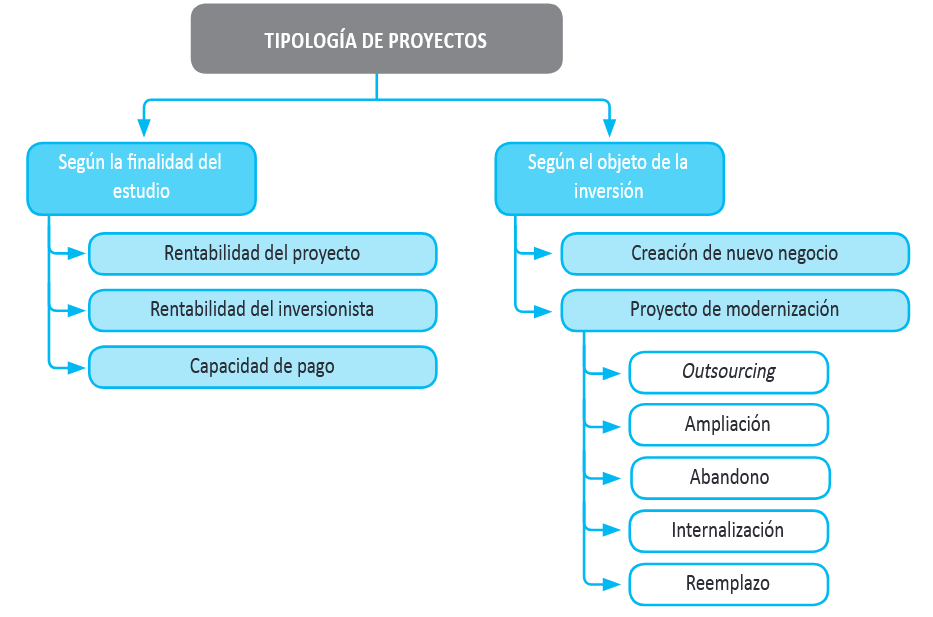
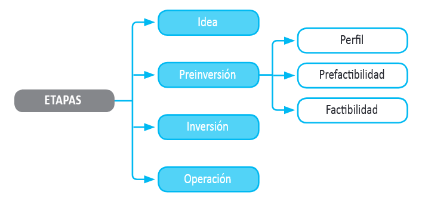
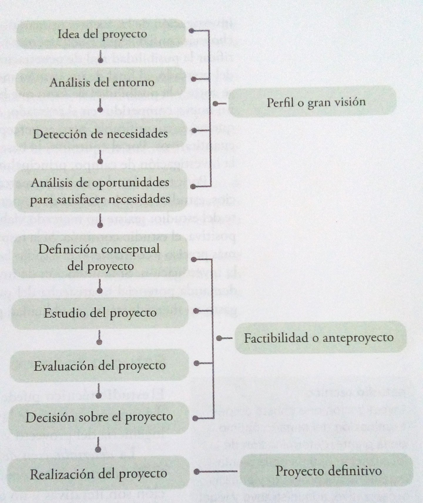

Clase 2 – Unidad 1: Introducción y conceptualizacion
20 marzo 2026
Unidad: 1
Introducción - Formulación y Evaluación de Proyectos de Inversión
7to. Semestre – Administración de Empresas / Ing. Comercial
Profesor: Mgtr. Andreas Schneider, CERM
Objectivo general
Al concluir el estudio de este capitulo el alumno sabrá que es un proyecto e identificara sus partes y objetivos.
Objetivos especificos
- Definir que es un proyecto.
- Exponer las causas que hacen importantes a los proyectos.
- Mencionar las partes generales de que consta la evaluación de un proyecto.
- Explicar cual es el objetivo del estudio de mercado.
- Comprender en que consiste el estudio técnico.
- Explicar que se pretende con el estudio económico.
- Determinar cual es el objetivo de la evaluación económica.
Conceptulizacion
Que es un proyecto?
Un proyecto es la búsqueda de una solución inteligente al planteamiento de un problema, la cual tiende a resolver una necesidad humana, por ejemplo, de educación, alimentación, salud, ambiente, cultura, etc.
Un proyecto de inversión es un plan que, si se le asigna determinado monto de capital y se le proporcionan insumos de varios tipos, producirá un bien o un servicio, útil a la sociedad.
La evaluación de un proyecto de inversión, cualquiera que este sea, tiene por objecto conocer su rentabilidad económica y social, de tal manera que asegure resolver una necesidad human en forma eficiente, segura y rentable.
Un proyecto es:
- la unidad nuclear de la planificación operativa
- debe ser consistente con la planificación estratégica
- organiza recursos (concentrados) y actividades
- tiene un plazo acotado
- tiene un costo determinado (presupuesto)
- se realiza bajo una unidad de gerencia
- involucra a una población definida
- se desarrolla en un ámbito geográfico definido
Tambien:
- el proceso (participativo) es importante
- deben dejar instaladas capacidades permanentes
La importancia y causantes de un proyecto
Se calcula que solo una de cada cincuenta ideas de negocio es realmente viable desde el punto de vista comercial. Por lo tanto, un estudio de viabilidad empresarial es una forma eficaz de evitar el desperdicio de más inversiones o recursos.
Si, a la vista de los resultados del estudio, se considera que un proyecto es viable, el siguiente paso lógico es elaborar el plan de negocio completo.

Niveles de planificacion

Estructura general de la evaluacion de proyectos

Cada parte de esta metodología tiene sus técnicas de análisis y sirven para hacer una serie de determinaciones, por ejemplo, mercado insatisfecho, costos totales etc. Aunque la metodología tenga una aplicación generalizada, la decisión final la toma una persona.
Tipologia de proyectos

Los proyectos se pueden distinguir entre proyectos que buscan crear nuevos negocios o empresas, y proyectos que buscan evaluar un cambio, mejora o modernización en una empresa existente.
Algunos casos típicos de proyectos en empresas en marcha,por ejemplo, para el sector salud son los siguientes.
- Outsourcing: externalización de los servicios de lavandería para destinar los espacios liberados a ampliar las instalaciones médicas o para reducir costos.
- Ampliación: construcción y habilitación de nuevos boxes para aumentar la capacidad de atención y reducir las listas de espera de pacientes.
- Abandono: cierre de una parte de la unidad de cirugía reconstructiva si tiene mucha capacidad ociosa, para transformarla en un centro de imageneología.
- Internalización: creación de un laboratorio de procesamiento de muestras en el interior del establecimiento, para evitarle al paciente recurrir a otros centros médicos.
- Reemplazo: modernización de los equipos de escáner.
Etapas de un proyecto de inversion

La etapa de idea corresponde al proceso sistemático de búsqueda de nuevas oportunidades de negocios o de posibilidades de mejoramiento en el funcionamiento de una empresa, proceso que surge de la identificación de opciones de solución de problemas e ineficiencias internas que pudieran existir, o de las diferentes formas de enfrentar las oportunidades de negocios que se pudieran presentar.
Es aquí donde se realiza el primer diagnóstico de la situación actual. Aquí se debe vincular el proyecto con la solución de un problema, donde se encuentren las evidencias básicas que demuestren la conveniencia de implementarlo.
La idea es la primera y más importante etapa, ya que indica el problema a resolver o la oportunidad de negocio a desarrollar, presentando las alternativas básicas de la solución.
La etapa de preinversión corresponde al estudio de la viabilidad económica de las diversas opciones de solución identificadas para cada una de las ideas de proyectos. Esta etapa se puede desarrollar de tres formas distintas, dependiendo de la cantidad y la calidad de la información considerada en la evaluación: perfil, prefactibilidad y factibilidad.
Proceso de la evaluacion
En un estudio de evaluación de proyectos se distinguen tres niveles de profundidad.
Perfil
El perfil (o gran visión, identificación de la idea) es el primero y mas simple y se elabora a partir de la información existente de una idea basada en el juicio común y en términos monetarios, solo presenta cálculos globales. Su análisis es, con frecuencia, estático y se basa principalmente en información secundaria, generalmente de tipo cualitativo, en opiniones de expertos o en cifras estimativas.
Anteproyecto
El anteproyecto es el estudio que profundiza en la investigación de mercado, detalla la tecnología e emplear, determina los costos totales, la rentabilidad económica, e es la base para que los inversionistas tomen una decisión. El proceso es esencialmente dinámico, es decir, proyectan los costos y beneficios a lo largo del tiempo y los expresan mediante un flujo de caja estructurado en función de criterios convencionales previamente establecidos.
El nivel más profundo y final se conoce como proyecto definitivo.
Proyecto definitivo
Es el estudio final que contiene la información del anteproyecto más los canales de comercialización para el producto, contratos de venta, actualización de las cotizaciones de la inversión y presenta planos arquitectónicos
Los pasos de la generación de un proyecto se dan en la siguiente figura.

La primera parte que deberá generar y presentar el estudio es la introducción.
- Introducción: breve reseña histórica del desarrollo y los usos del producto, que precisa los factores relevantes que influyen directamente en su consumo.
- Marco de desarrollo: sitúa el estudio en las condiciones económicas y sociales, y aclara por que se pensó en emprenderlo.
- Estudio de mercado: es la primera parte de la investigación formal del estudio. Es la investigación que consta de la determinación y cuantificación de la demanda y la oferta, el análisis de los precios y el estudio de la comercialización.
- Estudio técnico: es la investigación que consta de determinación del tamaño optimo de la planta, determinación de la localización optima de la planta, ingeniería del proyecto y análisis organizativo, administrativo y legal.
- Estudio económico: es el ordenamiento y la sistematización de la información de carácter monetario y elaboración de los cuadros analíticos que sirven de base para la evaluación económica.
- Evaluación económica: describe los métodos de evaluación que toman en cuenta el valor del dinero a través del tiempo, anota sus limitaciones de aplicación y los compara con métodos contables de evaluación para mostrar la aplicación practica de ambos.
- Sensibilización: En general, los modelos de sensibilización muestran el grado de variabilidad que puede exhibir o resistir, dependiendo del modelo utilizado, uno o más de los componentes del flujo de caja. La teoría ofrece, a este respecto, dos modelos distintos para efectuar el análisis de sensibilidad: uno que calcula qué pasa con la rentabilidad del proyecto si cambia el valor de una o más variables incluidas en la proyección (una variación de este modelo mide la rentabilidad en tres escenarios distintos: el normal, que corresponde al flujo original del proyecto, uno optimista y otro pesimista); y otro modelo que busca determinar hasta dónde resistiría un proyecto que modifique el valor de esa variable8, es decir, el punto límite para que se obtenga únicamente la rentabilidad deseada después de recuperar la inversión.

Mgtr. Andreas Schneider - Schneider | Consulting Firm